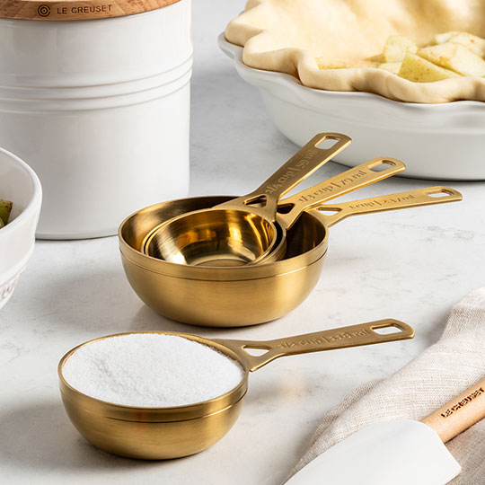

Baking Tips
Simple preparation and good baking habits can make a big difference in the kitchen. Here are a few tips to help make your next baking project easier.

Image Source: Crate & Barrel
Measure Ingredients Correctly
Accurate measurements can make a big difference when baking. Use measuring cups and spoons for the correct ingredients, and avoid packing flour into the measuring cup unless the recipe specifically tells you to.
Use Room-Temperature Ingredients
When a recipe calls for room-temperature ingredients, give butter, eggs, cream cheese, or other refrigerated ingredients time to warm up. This can help ingredients combine more evenly.
Prepare Ingredients Early
Before you begin baking, gather and prepare all of your ingredients. Measure what you need, soften or bring ingredients to room temperature when required, and make sure everything is ready before you start mixing. This can make the baking process smoother and help prevent missing an ingredient.
Don't Overmix
Once the dry and wet ingredients are combined, mix only as much as the recipe requires. Overmixing some batters can affect the finished texture.
Read the Recipe First
Read through the entire recipe before beginning. Make sure you have the ingredients, equipment, and enough time to complete all the steps.
Baking Measurement Guide
| Measurement | Equivalent |
|---|---|
| 3 teaspoons | 1 tablespoon |
| 4 tablespoons | 1/4 cup |
| 8 tablespoons | 1/2 cup |
| 16 tablespoons | 1 cup |
| 2 cups | 1 pint |